Étudiant en Informatique · Paris
Yacine
LARFI
Machine Learning · Développement Web · Algorithmique
scroll
Étudiant en Informatique · Paris
Machine Learning · Développement Web · Algorithmique
3ème année de Licence Informatique à l'Université Sorbonne Paris Nord. Passionné par l'intelligence artificielle, le développement logiciel et les mathématiques appliquées.
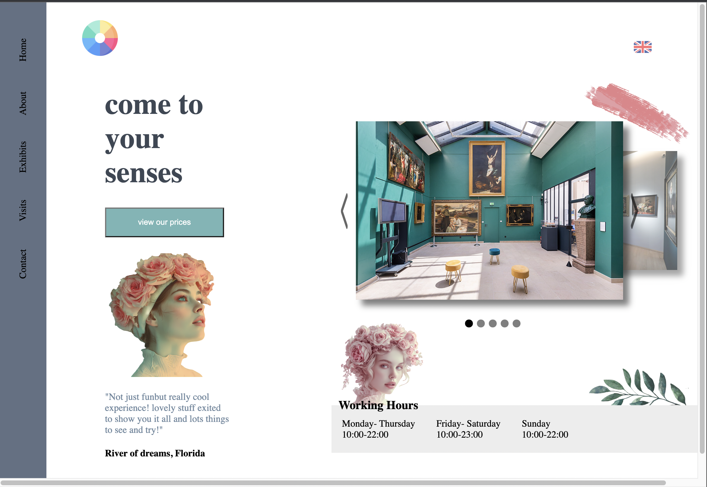
Site personnel développé en HTML / CSS / JavaScript.
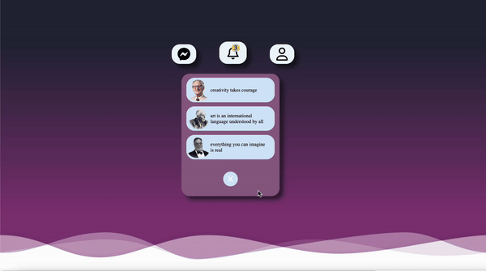
Système de notifications animées (HTML/CSS/JS).
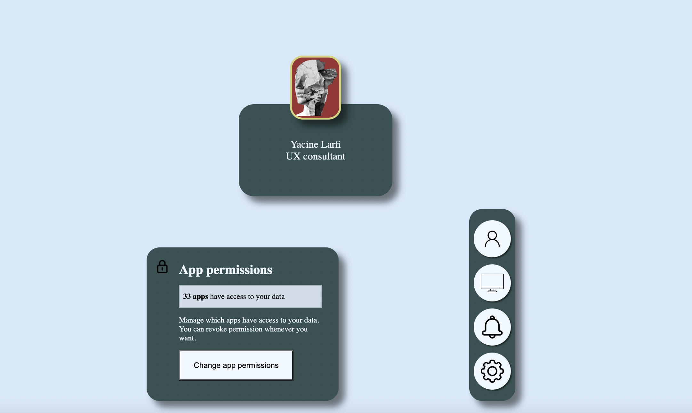
Composants d'options réutilisables pour interfaces web.
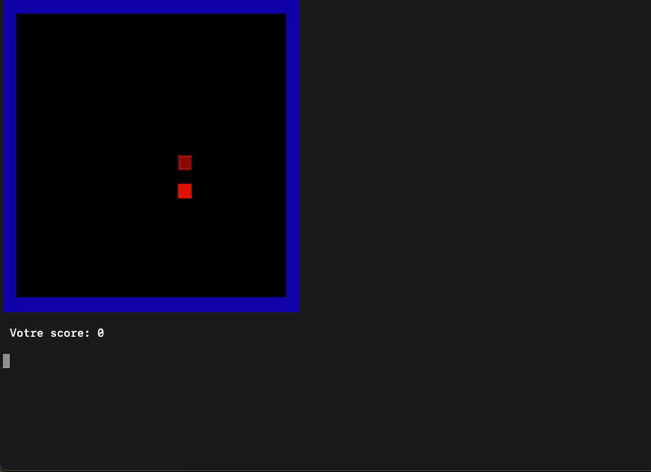
Jeu Snake en C avec affichage terminal via NCurses.
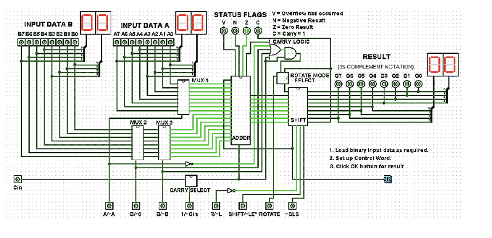
Concepteur de circuits logiques avec interface Swing.
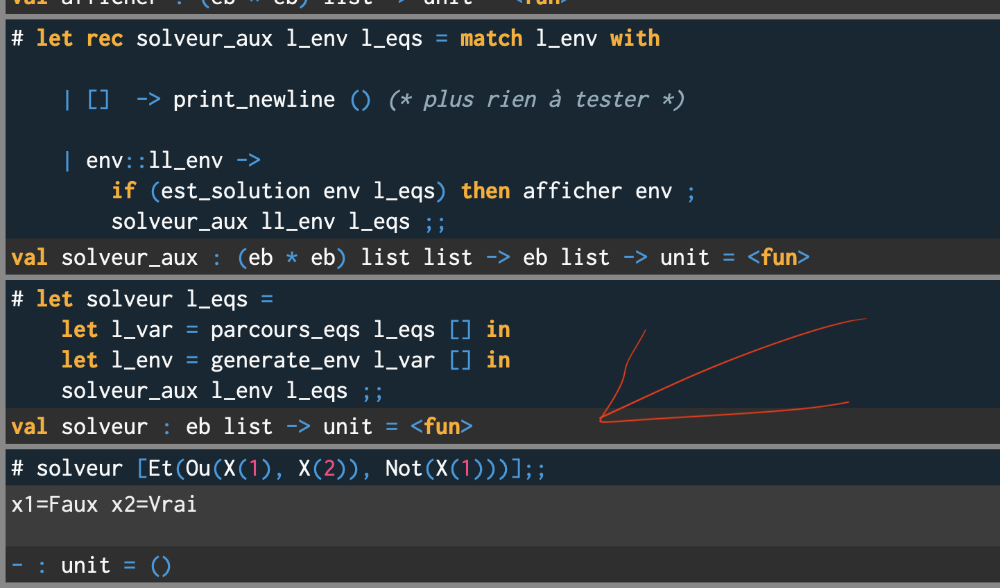
Structures de données et algorithmes fonctionnels.
Prédiction de prix immobiliers par machine learning.
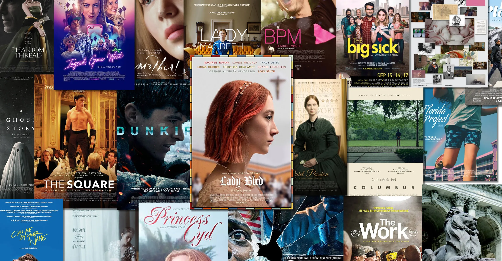
Système de recommandation de films par ML.
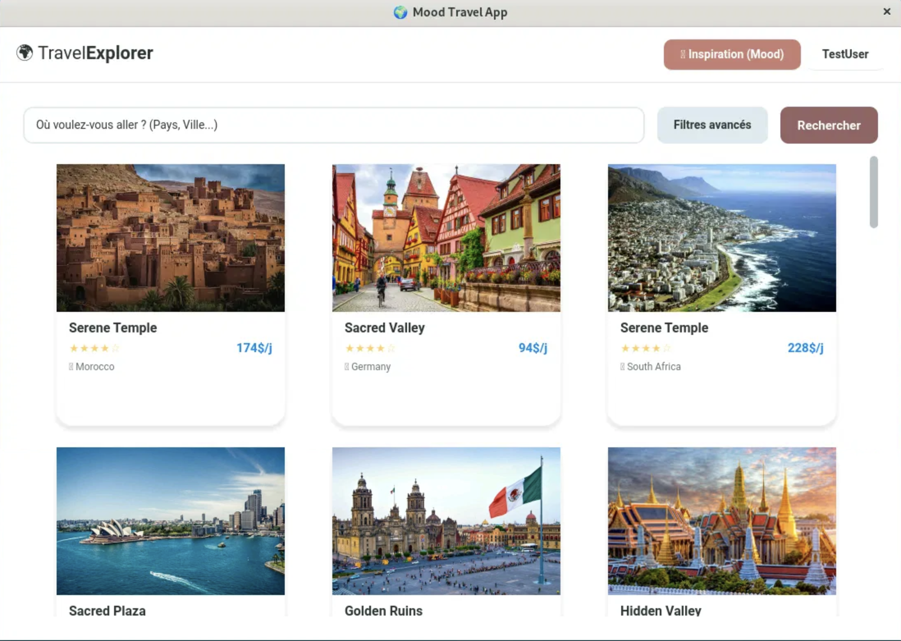
Application d'exploration de destinations de voyage.
Compilateur écrit en OCaml traduisant un sous-ensemble de JavaScript en code assembleur x86. Inclut lexer, parser, analyse sémantique et génération de code.
Plateforme communautaire de randonnée développée en HTML/CSS/JS et PHP. Gestion d'expéditions, réservations, boutique d'équipement et mur de partage de médias.
Application médicale Flask avec moteur d'analyse IA (règles) détectant les interactions médicamenteuses. Workflow médecin–pharmacien, rapports et notifications.
React, HTML, CSS, Java Swing
C, Assembleur, Bash, Python, Java, JavaScript, TypeScript
NumPy, Pandas, Selenium, API OpenAI, Web scraping
Git, GitHub Actions, Linux, Nginx, VS Code
SQL, XML, JSON, CSV
Jupyter Notebook, Google Colab
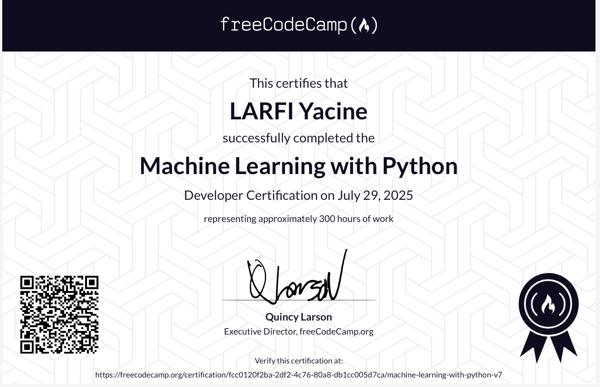
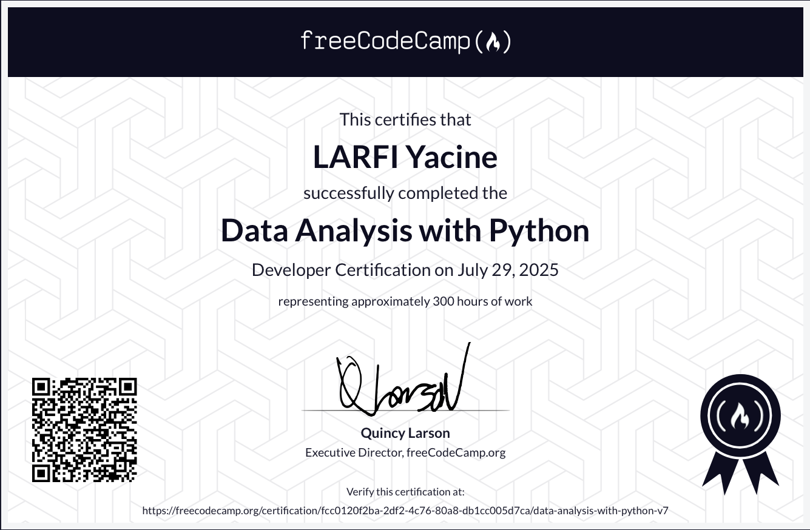
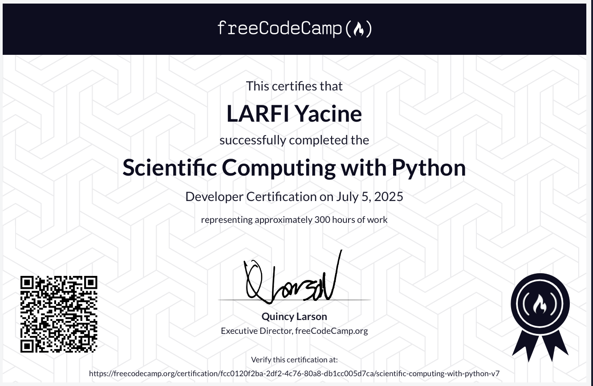
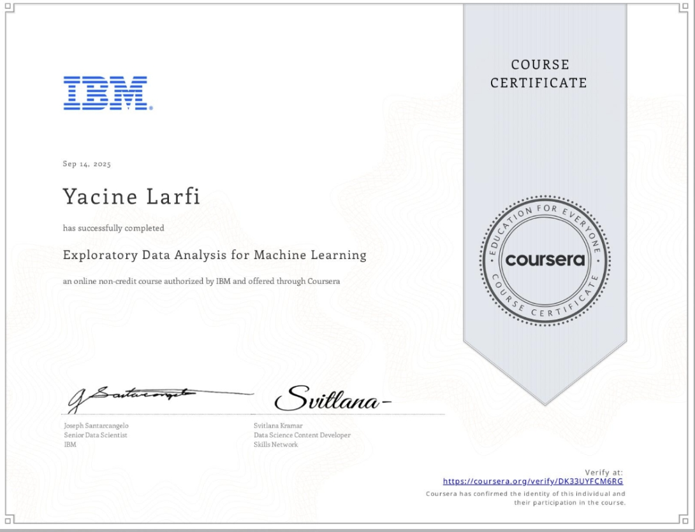
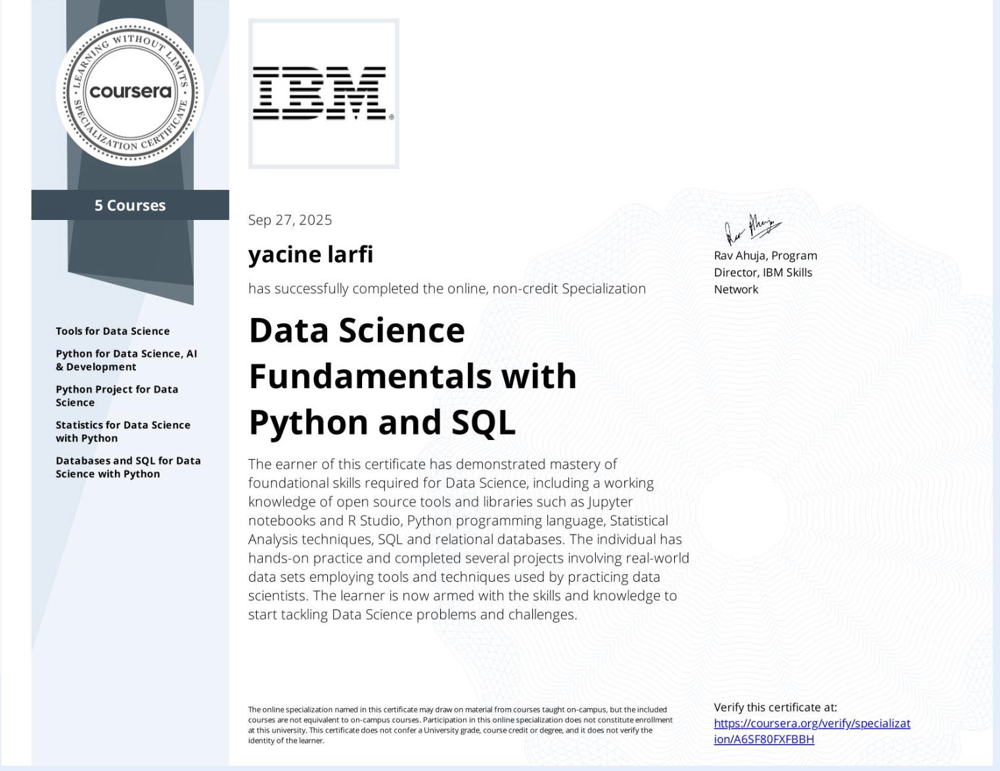